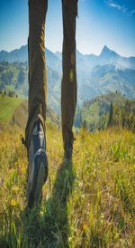

You won't find more hiking diversity anywhere
Looking for a great trail near Payson, Utah? AllTrails has 21 great hiking trails, mountain biking trails, running trails and more, with hand-curated trail maps and driving directions as well as detailed reviews and photos from hikers, campers, and nature lovers like you. .
If you're looking for the best trails around Rock Canyon Park or Utah Lake State Park, we've got you covered. Ready for some activity? There are 12 moderate trails in Payson ranging from 2.8 to 11.6 miles and from 4,829 to 9,852 feet above sea level. Start checking them out and you'll be out on the trail in no time!